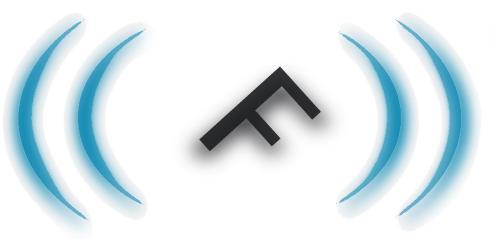

INSTITUT D’EDUCACIÓ SECUNDÀRIA |
Departamento de Informática

Ciclo Formativo de Grado Superior:
Administración de Sistemas Informáticos en Red
Programación didáctica del Módulo: (Curso 2026-2027) |
Profesor/a: María Bañuls Ribes
- 1. Propuestas de mejora y modificaciones respecto a la versión anterior
- 2. Datos identificativos, marco normativo y contextualización
- 3. Relación entre los estándares de competencia y el módulo
- 4. Contribución de los RA a las competencias
- 5. Esquema general y secuenciación de las unidades
- 5.1. Contenidos básicos y adaptación didáctica
- 5.2. Temporalización presencial
- 5.3. Reparto centro-empresa
- 5.4. Desarrollo de las unidades de programación
- 5.4.1. UP01. Instalación y virtualización
- 5.4.2. UP02. Linux
- 5.4.3. UP03. Procesos y servicios
- 5.4.4. UP04. Scripting y automatización
- 5.4.5. UP05. Docker y despliegue
- 5.4.6. UP06. Gestión de contenedores
- 5.4.7. UP07. Servicios de directorio
- 5.4.8. UP08. Administración remota
- 5.4.9. UP09. Servidores de impresión
- 5.4.10. UP10. Integración de sistemas y cierre de criterios
- 6. Metodología del proceso de enseñanza-aprendizaje
- 7. Recursos didácticos y referencias
- 8. Uso de espacios y equipamientos
- 9. Medidas de atención a la diversidad
- 10. Evaluación del aprendizaje
- 11. Actividades complementarias y extraescolares
- 12. Evaluación de la programación y de la práctica docente
- 13. Otros apartados y cierre de la versión aprobada
- Appendix A: Matriz de criterios de evaluación y evidencias
- Appendix B: Registro de seguimiento propuesto
Departamento de Informática · IES Font · València
Ciclo: Técnico Superior en Administración de Sistemas Informáticos en Red (ASIR).
Módulo: 0374 Administración de Sistemas Operativos (ASO).
Nivel y modalidad: segundo curso, presencial.
Curso académico: 2026-2027.
Docente: María Bañuls Ribes.
|
Important
|
Documento de trabajo para revisión y aprobación del departamento. Adapta la estructura de la plantilla facilitada, que correspondía a Programación de DAW en 2025-2026, al módulo de ASO en 2026-2027. Las decisiones didácticas que siguen son propuestas para el grupo. Los campos marcados PENDIENTE DE VALIDACIÓN requieren los acuerdos del PCCF (Proyecto Curricular de Ciclo Formativo), la distribución horaria vigente y el plan de formación en empresa. No se presentan como decisiones ya aprobadas. |
1. Propuestas de mejora y modificaciones respecto a la versión anterior
No se ha aportado una programación presencial anterior aprobada del módulo. El registro recoge las adaptaciones de los materiales disponibles y del desarrollo comunicado por la docente.
| Fecha | Modificación |
|---|---|
30/09/2026 |
Revisión 1.1: incorporación del Decreto 114/2025, artículo 9 y anexo II; corrección de la carga a 133 horas y actualización del marco autonómico. |
30/09/2026 |
Adaptación de la plantilla a ASIR, módulo 0374 y curso 2026-2027. |
30/09/2026 |
Sustitución de la temporalización a distancia por una propuesta presencial de lunes y martes, dos horas cada día. |
30/09/2026 |
Inicio con instalación, Linux, procesos, automatización y contenedores; desarrollo de directorio, administración remota, impresión e integración después del 22 de enero. |
30/09/2026 |
Uso inicial de LliureX 21 y VirtualBox; Ubuntu Server como invitado. Acceso al servidor departamental sujeto a conectividad y permisos. |
30/09/2026 |
Incorporación de Plan B teórico y registro de operaciones prácticas pendientes de ejecutar. |
30/09/2026 |
Trazabilidad entre criterios de evaluación, unidades e instrumentos. Diferenciación entre tareas preparatorias y evidencias propias de ASO. |
2. Datos identificativos, marco normativo y contextualización
2.1. Datos identificativos
| Dato | Valor |
|---|---|
Familia profesional |
Informática y Comunicaciones. |
Título |
Técnico Superior en Administración de Sistemas Informáticos en Red. |
Módulo y código |
Administración de Sistemas Operativos, 0374. |
Créditos ECTS de referencia |
8, según el título estatal. |
Centro y localidad |
IES Font, València capital. Denominación administrativa y código de centro: PENDIENTES DE VALIDACIÓN. |
Curso y modalidad |
2.º ASIR, presencial, 2026-2027. |
Horario comunicado |
Lunes y martes, dos horas cada día: cuatro horas semanales. |
Carga anual |
133 horas; cuatro horas semanales en segundo curso, según el anexo II del Decreto 114/2025 (página 72). Reparto centro-empresa pendiente del plan aprobado. |
Grupo |
Número de estudiantes, características de acceso y necesidades específicas: completar tras evaluación inicial. |
Docente |
María Bañuls Ribes. |
Canales |
Aules para avisos, tareas y calificaciones; web de ASO para teoría y prácticas. |
2.2. Marco normativo
El marco general del centro se remite al PCCF. Para este módulo se consideran las siguientes referencias, que deberán contrastarse con sus textos vigentes y las instrucciones autonómicas de 2026-2027 antes de la aprobación:
-
Real Decreto 1629/2009, de 30 de octubre: título de ASIR, módulo 0374, resultados de aprendizaje, criterios y orientaciones pedagógicas.
-
Real Decreto 500/2024, de 21 de mayo: modificación de títulos de grado superior en el nuevo marco de FP.
-
Ley Orgánica 3/2022, de ordenación e integración de la Formación Profesional.
-
Real Decreto 659/2023, de ordenación del Sistema de Formación Profesional.
-
Decreto 114/2025, de 29 de julio, del Consell (DOGV 10165, 04/08/2025): currículo autonómico en el nuevo sistema de FP. Artículo 3: referencia de RA y criterios; artículo 7: formación en empresa; artículo 9: estructura de la programación; anexo II, página 72: ASO, código 0374, segundo curso, cuatro horas semanales y 133 horas.
La Orden 36/2012, de 22 de junio, queda como antecedente histórico: la disposición derogatoria primera, apartado 56, del Decreto 114/2025 la deroga expresamente. Las disposiciones transitorias mantienen el régimen anterior para los planes en extinción en los términos allí previstos; no se utiliza como base horaria del grupo ordinario de 2026-2027.
Conforme al artículo 3.2 del Decreto 114/2025, los RA y criterios se remiten al real decreto del título, con las concreciones que correspondan. La estructura de esta programación se alinea con el artículo 9. El reparto de las 133 horas entre unidades es una propuesta docente, no una distribución impuesta por el decreto. Queda por contrastar el calendario y las instrucciones específicas de 2026-2027, junto con los acuerdos del PCCF.
2.3. Contextualización del módulo
El grupo trabaja presencialmente en un aula de informática con LliureX 21. Se dispone de VirtualBox para las primeras instalaciones de Ubuntu Server. Se parte de conocimientos de primer curso sobre sistemas, redes y hardware, que se comprobarán mediante una actividad inicial de inventario y una ficha de planificación de VM.
La VLAN del aula ha dificultado el acceso SSH y web al servidor del departamento. No se da por resuelta esa incidencia. Las prácticas se realizarán localmente cuando sea posible y migrarán al servidor cuando se confirme la disponibilidad. La contextualización general del centro corresponde al PCCF.
3. Relación entre los estándares de competencia y el módulo
ASO desarrolla tareas profesionales de administración de sistemas, servicios, cuentas, automatización y soporte. La relación siguiente es funcional; no constituye una equivalencia normativa de acreditación.
| Ámbito profesional | RA | Evidencia formativa |
|---|---|---|
Administración de servicios e identidades |
RA1, RA2 |
Directorio operativo, gestión de procesos y servicios. |
Automatización de la administración |
RA3, RA7 |
Tareas programadas y guiones probados. |
Explotación y soporte remoto |
RA4 |
Accesos protegidos y diagnóstico documentado. |
Servicios compartidos e interoperabilidad |
RA5, RA6 |
Impresión y recursos compartidos entre sistemas. |
PENDIENTE DE VALIDACIÓN: incorporar desde el PCCF y el anexo de correspondencias vigente la denominación y el código oficial de cada estándar asociado al módulo. No se asignan códigos de unidades de competencia sin verificar su correspondencia actual.
3.1. Contribución a los objetivos generales del ciclo
Las orientaciones del módulo en el RD 1629/2009 relacionan ASO con los objetivos a), b), n), ñ), o) y q). Se conserva esa identificación de referencia; las descripciones siguientes son una síntesis didáctica y deberán cotejarse con la versión del título que utilice el PCCF.
| Referencia | Contribución del módulo |
|---|---|
a), b) |
Analizar software de base e instalar y configurar sistemas y servicios siguiendo documentación técnica. |
n), ñ) |
Asignar recursos, analizar disfunciones y restablecer el servicio mediante un diagnóstico ordenado. |
o) |
Aplicar herramientas y procedimientos de administración valorando cambios tecnológicos. |
q) |
Resolver incidencias y tomar decisiones contrastando información y alternativas. |
La instalación inicial recupera aprendizajes previos y prepara el laboratorio. Su realización, por sí sola, no acredita un RA independiente de ASO.
4. Contribución de los RA a las competencias
4.1. Competencia general
El módulo contribuye a configurar, administrar y mantener sistemas informáticos, atendiendo a su funcionamiento, disponibilidad y seguridad. Se concreta en servicios verificables y documentación que permita repetir y mantener las configuraciones.
4.2. Competencias profesionales y para la empleabilidad
La referencia pedagógica del título vincula el módulo con las competencias a), l), m), n), ñ), o), q), r) y s). En esta programación se desarrollan mediante administración de servidores, mantenimiento, diagnóstico, documentación, colaboración, responsabilidad y adaptación. La nomenclatura CPPE y su correspondencia con la formulación del título se armonizarán con el PCCF; no se renumeran las competencias oficiales.
4.3. Competencias transversales
Se emplean identificadores internos: CT1, comunicación técnica; CT2, autonomía y diagnóstico; CT3, cooperación y reparto de tareas; CT4, seguridad y tratamiento responsable de información; CT5, accesibilidad, uso responsable de recursos y aprendizaje continuo. No son códigos oficiales ni añaden porcentajes de nota independientes.
4.4. Resultados de aprendizaje
Los siguientes títulos son una síntesis del currículo; el anexo de criterios conserva las letras de identificación para facilitar su cotejo.
| RA | Desempeño | Competencias movilizadas |
|---|---|---|
RA1 |
Administrar directorios e integrarlos en una red. |
Administración, seguridad, CT1-CT4. |
RA2 |
Administrar procesos con seguridad y eficiencia. |
Mantenimiento y diagnóstico, CT1-CT2-CT4. |
RA3 |
Automatizar tareas del sistema. |
Eficiencia y autonomía, CT1-CT2-CT4. |
RA4 |
Administrar remotamente sistemas en red. |
Soporte y seguridad, CT1-CT2-CT4. |
RA5 |
Administrar servidores de impresión. |
Gestión de servicios, CT1-CT3-CT5. |
RA6 |
Integrar sistemas libres y propietarios. |
Interoperabilidad y cooperación, CT1-CT3-CT4. |
RA7 |
Utilizar guiones para administrar sistemas y servicios. |
Automatización y adaptación, CT1-CT2-CT4-CT5. |
5. Esquema general y secuenciación de las unidades
5.1. Contenidos básicos y adaptación didáctica
Se desarrollan directorios y autenticación centralizada; procesos, hilos, interrupciones, estados y arranque; planificación de tareas; información y sistemas de archivos virtuales; administración remota; impresión; interoperabilidad y recursos compartidos; guiones, depuración y bibliotecas de funciones en sistemas libres y propietarios.
Linux proporciona el entorno inicial. Docker y Compose se utilizan como contexto aplicado para procesos, servicios, automatización y administración remota. Se programan además las actividades específicas de directorio, impresión e integración que requieren sus propios criterios.
5.2. Temporalización presencial
La carga curricular es de 133 horas, según el anexo II del Decreto 114/2025. Se propone la siguiente distribución didáctica. Las sesiones indicadas son equivalencias de dos horas para planificar, no un calendario cerrado ni una atribución íntegra al centro. Incluye demostraciones, actividades, evaluación, realimentación y recuperación integrada.
El calendario definitivo se calculará con lunes y martes lectivos reales, descontando festivos de València, vacaciones y días no lectivos del centro. No se ha aportado el calendario aprobado ni el periodo de empresa. Si disminuye el tiempo disponible se ajustará la extensión de los ejercicios y se coordinarán evidencias, manteniendo la cobertura de los criterios.
| UP | Título | Horas | Sesiones | Ventana orientativa |
|---|---|---|---|---|
01 |
Instalación y virtualización |
12 |
6 |
Septiembre-inicio de octubre |
02 |
Linux |
10 |
5 |
Septiembre-octubre |
03 |
Procesos y servicios |
10 |
5 |
Octubre-noviembre |
04 |
Scripting y automatización |
16 |
8 |
Noviembre; ampliación posterior |
05 |
Docker y despliegue |
8 |
4 |
Diciembre |
06 |
Gestión de contenedores |
8 |
4 |
Enero, antes del hito |
07 |
Servicios de directorio |
22 |
11 |
Después del 22 de enero |
08 |
Administración remota |
12 |
6 |
Después del 22 de enero |
09 |
Servidores de impresión |
12 |
6 |
Después del 22 de enero |
10 |
Integración de sistemas y cierre de criterios |
23 |
11 + 1 hora |
Después del 22 de enero |
Total |
Carga curricular |
133 |
66 + 1 hora |
Pendiente de calendario definitivo |
Las UP01-06 suman 64 horas; las UP07-10, 69. No se supone que la secuencia agote todas las sesiones hasta enero: el margen real, si existe, se destinará a refuerzo, incidencias y evidencias pendientes. Las UP pueden solaparse para retomar Linux o guiones en casos posteriores.
| Hito orientativo | Producto | Organización |
|---|---|---|
08/10/2026 |
Sistema instalado y comprobado |
Recoger evidencias en sesiones previas; el jueves no añade una clase al horario. |
21/12/2026 |
Servicio desplegado en contenedor |
Prueba de funcionamiento y documentación del acceso y la persistencia. |
22/01/2027 |
Gestión de contenedores |
Programar la evidencia antes del viernes 22; este día no añade sesión. |
5.3. Reparto centro-empresa
H_total = 133 horas. H_centro y H_empresa quedan pendientes de la distribución aprobada. Según el artículo 7, la formación en empresa contribuye a los RA de los módulos y no tiene un currículo separado. Se verificará H_total = H_centro + H_empresa; porcentaje de centro = 100 × H_centro/H_total y porcentaje de empresa = 100 × H_empresa/H_total. Las 133 horas de la tabla no se suman a unas horas adicionales de empresa. Antes de aprobar, se reasignarán las actividades según el plan individual y la capacidad real de cada empresa.
5.4. Desarrollo de las unidades de programación
Las vinculaciones RA/CE que siguen son didácticas. La correspondencia oficial completa se encuentra en el anexo A. En todas las UP, CT1 y CT4 se observan en la documentación y en el tratamiento de cuentas, permisos y datos.
5.4.1. UP01. Instalación y virtualización
| Elemento | Desarrollo |
|---|---|
Justificación |
Preparar un entorno de práctica recuperando conocimientos previos. |
Temporalización |
12 horas; equivalencia de 6 sesiones de dos horas. Distribución didáctica propuesta, pendiente de calendario y reparto centro-empresa. |
RA y CE |
Base instrumental para RA2, RA4 y RA7; no constituye un RA nuevo. |
OG, competencias y CT |
a), b); administración de servidores; CT2, CT5. |
Objetivos didácticos |
Distinguir anfitrión e invitado; elegir recursos; instalar y verificar el sistema. |
Contenidos |
Hipervisores, ISO, vCPU, RAM, VDI, NAT, DHCP, particionado guiado, usuario y apagado. |
Actividades |
Ficha previa, instalación de Ubuntu Server y comprobaciones con hostnamectl, ip, lsblk, df y free. |
Recursos |
VirtualBox en LliureX 21, ISO oficial, espacio local suficiente. |
Evaluación y calificación |
Lista de comprobación diagnóstica y memoria de instalación. No asignar nota a CE no evidenciados. Aplicar la matriz de CE del apartado de evaluación; pesos pendientes de aprobación. |
Plan B |
Analizar capturas del instalador, diseñar recursos y justificar decisiones. Registrar la instalación real como pendiente. |
Actividades complementarias |
Sin visita confirmada; posibles actuaciones del apartado específico, sin horas añadidas no autorizadas. |
5.4.2. UP02. Linux
| Elemento | Desarrollo |
|---|---|
Justificación |
Adquirir fluidez de terminal antes de automatizar. |
Temporalización |
10 horas; equivalencia de 5 sesiones de dos horas. Distribución didáctica propuesta, pendiente de calendario y reparto centro-empresa. |
RA y CE |
Preparación RA2.e-f y RA7.a-c; consolidación en UP03 y UP04. |
OG, competencias y CT |
a), b), o); administración y aprendizaje autónomo; CT2, CT5. |
Objetivos didácticos |
Navegar y gestionar archivos; interpretar permisos; combinar comandos y consultar recursos. |
Contenidos |
Rutas, usuarios y grupos, permisos, tuberías, redirecciones, ayuda, paquetes e información del sistema. |
Actividades |
Crear un espacio de trabajo, configurar permisos de prueba y producir un informe explicado. |
Recursos |
VM Linux local; terminal y documentación. |
Evaluación y calificación |
Práctica observada y preguntas individuales; evidencias vinculadas solo a los CE realmente trabajados. Aplicar la matriz de CE del apartado de evaluación; pesos pendientes de aprobación. |
Plan B |
Interpretar un árbol de directorios, permisos y salidas proporcionadas; elaborar comandos razonados. |
Actividades complementarias |
Sin visita confirmada; posibles actuaciones del apartado específico, sin horas añadidas no autorizadas. |
5.4.3. UP03. Procesos y servicios
| Elemento | Desarrollo |
|---|---|
Justificación |
Comprender ejecución, arranque y diagnóstico. |
Temporalización |
10 horas; equivalencia de 5 sesiones de dos horas. Distribución didáctica propuesta, pendiente de calendario y reparto centro-empresa. |
RA y CE |
RA2.a-i. |
OG, competencias y CT |
a), n), ñ), q); mantenimiento y resolución de incidencias; CT2. |
Objetivos didácticos |
Distinguir proceso, hilo y trabajo; controlar procesos propios; analizar arranque y servicios. |
Contenidos |
Estados, interrupciones y excepciones, prioridades, /proc, ps, top, señales, systemd y registros. |
Actividades |
Seguir un proceso propio; modificar su prioridad; detenerlo; analizar un servicio y documentar un arranque. |
Recursos |
VM Linux, monitor gráfico disponible y registros preparados. |
Evaluación y calificación |
Prueba práctica RA2 y explicación de interrupciones, hilos y seguridad; informe de diagnóstico. Aplicar la matriz de CE del apartado de evaluación; pesos pendientes de aprobación. |
Plan B |
Reconstruir estados, relaciones y secuencia de arranque a partir de registros y capturas. |
Actividades complementarias |
Sin visita confirmada; posibles actuaciones del apartado específico, sin horas añadidas no autorizadas. |
5.4.4. UP04. Scripting y automatización
| Elemento | Desarrollo |
|---|---|
Justificación |
Automatizar operaciones repetitivas de forma controlada. |
Temporalización |
16 horas; equivalencia de 8 sesiones de dos horas. Distribución didáctica propuesta, pendiente de calendario y reparto centro-empresa. |
RA y CE |
RA3.a-h y RA7.a-f,h-i; RA7.g se completa en UP10. |
OG, competencias y CT |
b), n), o), q); automatización; CT2, CT5. |
Objetivos didácticos |
Crear y depurar guiones; programar tareas puntuales y periódicas; aplicar permisos mínimos. |
Contenidos |
Bash, variables, parámetros, condiciones, bucles, funciones, códigos de salida, cron/at o temporizadores; planificador gráfico; introducción a PowerShell. |
Actividades |
Informe automático, tarea programada, gestión de cuentas ficticias y adaptación de un guion. |
Recursos |
VM Linux; entorno propietario autorizado para ampliación; biblioteca de funciones propia. |
Evaluación y calificación |
Código comentado, pruebas y ejecución individual; actividad específica de planificador gráfico. Aplicar la matriz de CE del apartado de evaluación; pesos pendientes de aprobación. |
Plan B |
Trazar guiones, localizar errores y diseñar horarios; la ejecución y las herramientas gráficas se comprobarán después. |
Actividades complementarias |
Sin visita confirmada; posibles actuaciones del apartado específico, sin horas añadidas no autorizadas. |
5.4.5. UP05. Docker y despliegue
| Elemento | Desarrollo |
|---|---|
Justificación |
Aplicar administración a un servicio en contenedor. |
Temporalización |
8 horas; equivalencia de 4 sesiones de dos horas. Distribución didáctica propuesta, pendiente de calendario y reparto centro-empresa. |
RA y CE |
Aplicación parcial RA2.d,f,i y RA4.c,e,h-i si se administra remotamente. |
OG, competencias y CT |
b), n), ñ); servicios y diagnóstico; CT2. |
Objetivos didácticos |
Distinguir imagen y contenedor; desplegar un servicio; verificar puertos y persistencia. |
Contenidos |
Imágenes, ciclo de vida, publicación de puertos, volúmenes, variables y registros. |
Actividades |
Desplegar un servicio web y demostrar acceso y conservación de datos. |
Recursos |
VM Linux con Docker disponible; navegador; SSH si procede. |
Evaluación y calificación |
Demostración del servicio y memoria; usar Docker localmente no acredita administración remota. Aplicar la matriz de CE del apartado de evaluación; pesos pendientes de aprobación. |
Plan B |
Explicar la petición web con esquema de puertos, analizar configuración y salidas dadas. |
Actividades complementarias |
Sin visita confirmada; posibles actuaciones del apartado específico, sin horas añadidas no autorizadas. |
5.4.6. UP06. Gestión de contenedores
| Elemento | Desarrollo |
|---|---|
Justificación |
Mantener y recuperar un despliegue. |
Temporalización |
8 horas; equivalencia de 4 sesiones de dos horas. Distribución didáctica propuesta, pendiente de calendario y reparto centro-empresa. |
RA y CE |
Aplicación RA2.f,h-i, RA3.b-d,h y RA7.e-f,i según actividad. |
OG, competencias y CT |
n), ñ), o), q); mantenimiento; CT2, CT3. |
Objetivos didácticos |
Diagnosticar fallos; describir despliegues; comprobar copias y recuperación. |
Contenidos |
Compose, redes, volúmenes, logs, actualización, recreación, copia y restauración. |
Actividades |
Resolver incidencias de puerto, permisos y persistencia; automatizar una comprobación; restaurar datos de prueba. |
Recursos |
VM con Docker/Compose o servidor accesible. |
Evaluación y calificación |
Práctica individual de recuperación, guion y registro de pruebas antes del hito. Aplicar la matriz de CE del apartado de evaluación; pesos pendientes de aprobación. |
Plan B |
Revisar Compose y registros, proponer hipótesis y ordenar una restauración sin atribuir ejecución real. |
Actividades complementarias |
Sin visita confirmada; posibles actuaciones del apartado específico, sin horas añadidas no autorizadas. |
5.4.7. UP07. Servicios de directorio
| Elemento | Desarrollo |
|---|---|
Justificación |
Administrar identidades y autenticación centralizada. |
Temporalización |
22 horas; equivalencia de 11 sesiones de dos horas. Distribución didáctica propuesta, pendiente de calendario y reparto centro-empresa. |
RA y CE |
RA1.a-j; extensión RA7.e,g. |
OG, competencias y CT |
a), b), n), q); administración y seguridad; CT2, CT3. |
Objetivos didácticos |
Diseñar estructura; instalar directorio; administrar objetos; integrar cliente y probar autenticación. |
Contenidos |
LDAP, esquema, dominio, objetos, filtros, autenticación, herramientas gráficas y terminal, integración de servicios. |
Actividades |
Crear estructura de aula, usuarios y grupos, aplicar filtros, integrar un cliente y documentar pruebas. |
Recursos |
Servidor y cliente virtuales aislados; software libre y/o propietario con licencia disponible. |
Evaluación y calificación |
Práctica de directorio con lista de pruebas positivas y negativas y memoria de estructura. Aplicar la matriz de CE del apartado de evaluación; pesos pendientes de aprobación. |
Plan B |
Diseñar árbol y esquema, interpretar consultas y resolver casos de autenticación. Instalación e integración quedan pendientes. |
Actividades complementarias |
Sin visita confirmada; posibles actuaciones del apartado específico, sin horas añadidas no autorizadas. |
5.4.8. UP08. Administración remota
| Elemento | Desarrollo |
|---|---|
Justificación |
Consolidar acceso remoto seguro y diagnóstico entre sistemas. |
Temporalización |
12 horas; equivalencia de 6 sesiones de dos horas. Distribución didáctica propuesta, pendiente de calendario y reparto centro-empresa. |
RA y CE |
RA4.a-i; refuerzo RA3. |
OG, competencias y CT |
a), n), ñ), q); soporte remoto; CT2, CT4. |
Objetivos didácticos |
Comparar métodos; instalar servicios; gestionar cuentas; probar sesiones y transferencia cifrada. |
Contenidos |
SSH, claves, sesiones y servicios no orientados a sesión, escritorio remoto, herramientas nativas y gráficas, puertos y registros. |
Actividades |
Acceder entre sistemas heterogéneos, transferir un archivo y diagnosticar una conexión fallida. |
Recursos |
VM de cliente y servidor; SSH/escritorio remoto autorizado; red local aislada. |
Evaluación y calificación |
Demostración individual, contraste de métodos y documentación de acceso. Aplicar la matriz de CE del apartado de evaluación; pesos pendientes de aprobación. |
Plan B |
Analizar rutas, puertos y mensajes de error; diseñar accesos y explicar cifrado con registros de ejemplo. |
Actividades complementarias |
Sin visita confirmada; posibles actuaciones del apartado específico, sin horas añadidas no autorizadas. |
5.4.9. UP09. Servidores de impresión
| Elemento | Desarrollo |
|---|---|
Justificación |
Gestionar un servicio compartido con colas y permisos. |
Temporalización |
12 horas; equivalencia de 6 sesiones de dos horas. Distribución didáctica propuesta, pendiente de calendario y reparto centro-empresa. |
RA y CE |
RA5.a-i. |
OG, competencias y CT |
b), n), ñ); gestión de servicios; CT3, CT5. |
Objetivos didácticos |
Configurar servidor web de impresión; administrar impresoras lógicas, grupos y trabajos. |
Contenidos |
CUPS y herramientas del entorno propietario, puertos, protocolos, colas, grupos/clases y permisos. |
Actividades |
Compartir una impresora de prueba, generar trabajos desde clientes diferentes y resolver una cola detenida. |
Recursos |
VM, CUPS, cliente libre y propietario; impresora virtual o dispositivo de laboratorio. |
Evaluación y calificación |
Práctica con evidencia de grupos, cola, administración web y acceso heterogéneo. Aplicar la matriz de CE del apartado de evaluación; pesos pendientes de aprobación. |
Plan B |
Interpretar una cola, diseñar permisos y secuenciar el diagnóstico con capturas. |
Actividades complementarias |
Sin visita confirmada; posibles actuaciones del apartado específico, sin horas añadidas no autorizadas. |
5.4.10. UP10. Integración de sistemas y cierre de criterios
| Elemento | Desarrollo |
|---|---|
Justificación |
Integrar servicios y completar evidencias de sistemas libres y propietarios. |
Temporalización |
23 horas; equivalencia de 11 sesiones de dos horas y una hora adicional. Distribución didáctica propuesta, pendiente de calendario y reparto centro-empresa. |
RA y CE |
RA6.a-h; RA7.g y criterios pendientes de RA1-RA7. |
OG, competencias y CT |
a), b), n), ñ), o), q); interoperabilidad y trabajo en equipo; CT2, CT3, CT5. |
Objetivos didácticos |
Compartir recursos entre sistemas; verificar permisos; ejecutar guiones en ambos entornos; cerrar evidencias pendientes. |
Contenidos |
SMB/Samba, conectividad, permisos, clientes heterogéneos, guiones Bash y PowerShell, documentación y pruebas. |
Actividades |
Recurso compartido con usuarios autorizados y denegados, acceso en equipo, guiones equivalentes y defensa individual. |
Recursos |
VM Linux y sistema propietario autorizado; red aislada; plantillas de prueba. |
Evaluación y calificación |
Práctica integradora, matriz de acceso y demostración individual por CE; recuperación focalizada. Aplicar la matriz de CE del apartado de evaluación; pesos pendientes de aprobación. |
Plan B |
Diseñar matriz de permisos, analizar configuraciones y trazar guiones; programar pruebas prácticas pendientes. |
Actividades complementarias |
Sin visita confirmada; posibles actuaciones del apartado específico, sin horas añadidas no autorizadas. |
6. Metodología del proceso de enseñanza-aprendizaje
6.1. Enfoque y principios
Se parte de un problema de administración y de conocimientos previos. La docente demuestra el procedimiento explicando decisiones; el alumnado lo practica con apoyo y después resuelve una variación individual. Cada actividad termina con comprobación y explicación del resultado.
Se priorizan procedimientos reproducibles, consulta de documentación, mínimos privilegios, diagnóstico basado en evidencias y reversibilidad. Las configuraciones se realizan sobre el laboratorio asignado y con datos ficticios. Las actividades no alterarán el sistema anfitrión sin autorización.
6.2. Estrategias y papel de los participantes
La docente prepara entornos y fallos controlados, verifica requisitos, ofrece andamiaje y recoge evidencias. El alumnado planifica, ejecuta, contrasta resultados y registra incidencias. En parejas se alternarán ejecución y revisión; la evaluación del desempeño será individual.
Cada entrega incluirá objetivo, entorno, procedimiento justificado, comprobaciones, incidencias y conclusión. Las capturas se acompañarán de explicación. Los guiones se entregarán como archivos editables y con casos de prueba. La docente podrá solicitar una repetición breve para verificar la autoría.
6.3. Plan de contingencia
Si una práctica depende de SSH o web al departamento, se aplicará el Plan B de su UP. Se utilizará primero la VM local si permite realizar la misma operación. Si tampoco es posible, se trabajará con configuraciones, trazas y casos en papel o editor.
El registro distinguirá: evidencia ejecutada, evidencia de análisis y operación pendiente. Un análisis teórico puede acreditar comprensión, pero no sustituye automáticamente un criterio que exige instalar, configurar o probar. Se reservará una comprobación posterior en entorno funcional. Las incidencias de infraestructura no se imputarán como falta de competencia del alumnado.
6.4. Refuerzo, ampliación y uso de IA
El refuerzo utilizará procedimientos fragmentados, glosario, ejemplos comentados y prácticas de recuperación. La ampliación incorporará fallos adicionales, validación de entradas, bibliotecas de funciones y comparación de soluciones.
Cada tarea indicará si admite IA y para qué. Cuando se permita, el alumnado declarará el uso y verificará las propuestas antes de ejecutarlas. No se introducirán contraseñas, datos personales ni configuraciones confidenciales. La evaluación requerirá comprensión y ejecución individual cuando corresponda; no se establecerán sanciones automáticas ajenas al PCCF.
7. Recursos didácticos y referencias
7.1. Recursos físicos y lógicos
Ordenadores de aula con LliureX 21, VirtualBox, Ubuntu Server desde ISO oficial, terminal, editor, proyector y almacenamiento para evidencias. Servidor departamental con acceso condicionado a red, cuentas y permisos. Para RA6 y RA7.g se necesita además un entorno propietario autorizado: su disponibilidad y licencias deberán confirmarse antes de esas unidades.
Herramientas previstas: Bash, PowerShell, systemd, utilidades de procesos, planificadores de tareas en terminal y gráficos, Docker/Compose, SSH, herramientas de directorio, CUPS y Samba. Versiones y recursos se comprobarán antes de cada práctica; no se fija una versión de Ubuntu diferente de la ISO realmente utilizada.
7.2. Materiales y bibliografía
-
Web del módulo, mantenida en AsciiDoc; publicación gradual de unidades.
-
Aules: enunciados, rúbricas, comunicaciones, entregas y calificaciones.
-
Archivo ASO CEED.zip: referencia de teoría y ejercicios, adaptada a presencial. Conservar autoría y licencia de cada recurso reutilizado; los solucionarios docentes no se publican como material del alumnado.
8. Uso de espacios y equipamientos
Se combinarán trabajo individual y parejas, manteniendo cuentas y evidencias identificables. Los equipos físicos conservarán su configuración de aula. Cada VM tendrá un nombre, recursos, red y usuario previstos en la ficha previa. Las redes de práctica se aislarán y solo se publicarán los puertos necesarios y autorizados.
Se distribuirán las ISO por copia local o mecanismo acordado, se comprobará espacio libre y se evitarán descargas simultáneas innecesarias. Se organizarán copias de trabajos y, cuando proceda, instantáneas; estas no sustituyen una copia independiente. Al terminar se apagarán ordenadamente las VM.
9. Medidas de atención a la diversidad
El marco y los procedimientos de adopción de medidas se remiten al PCCF y al departamento de orientación. Las medidas se registrarán de forma individual sin incluir datos sensibles en esta programación.
-
Medidas ordinarias: instrucciones por pasos, demostración pausada, glosario, formatos de texto accesibles y esquemas; anticipación de rúbricas y ejemplos de evidencia.
-
Medidas específicas: adaptación de tiempos, medios de acceso y forma de presentación conforme a los informes y acuerdos autorizados, conservando la competencia que debe demostrarse.
-
Altas capacidades o avance rápido: diagnóstico abierto, scripts más robustos y comparación de alternativas, evitando que la ampliación sustituya el aprendizaje del resto del grupo.
-
Organización: parejas flexibles con roles alternos, seguimiento individual y tutorías de recuperación. Se ofrecerá acceso al entorno necesario sin presuponer disponibilidad de equipos en casa.
10. Evaluación del aprendizaje
10.1. Principios
La evaluación será inicial, continua, formativa y referida a RA y CE. Se registrará la evidencia individual, el contexto y las adaptaciones aplicadas. Los errores detectados y corregidos formarán parte del aprendizaje. La asistencia o una actitud genérica no sustituirán la demostración de criterios profesionales.
10.2. Instrumentos
-
D: diagnóstico inicial y preguntas de comprensión; sin peso independiente propuesto.
-
P: práctica observada o prueba individual de desempeño con lista de comprobación.
-
M: memoria técnica y evidencias comentadas.
-
G: guion, configuración editable y pruebas de ejecución.
-
C: caso escrito, interpretación de trazas o explicación oral.
-
E: informe de empresa, cuando el plan formativo asigne criterios a ese contexto.
Una evidencia podrá informar varios criterios si la rúbrica distingue cada uno. No se duplicará su valor por aparecer en una UP y en el proyecto. El anexo A recoge todos los CE de referencia y sus instrumentos propuestos.
10.3. Distribución de la evaluación por RA
| RA | Peso definitivo | Unidades principales | Instrumentos |
|---|---|---|---|
RA1 |
PENDIENTE |
07 |
P, M, C |
RA2 |
PENDIENTE |
03; aplicación 05-06 |
P, M, C |
RA3 |
PENDIENTE |
04; aplicación 06 y 10 |
P, G, M, C |
RA4 |
PENDIENTE |
08; aplicación 05 |
P, M, C |
RA5 |
PENDIENTE |
09 |
P, M, C |
RA6 |
PENDIENTE |
10 |
P, M, C |
RA7 |
PENDIENTE |
04 y 10; aplicación 06-07 |
G, P, M, C |
Los siete pesos deberán sumar 100 %. Los pesos de CE dentro de cada RA deberán sumar 100 %. No se trasladan los porcentajes de la programación a distancia. El departamento deberá aprobar y comunicar esta distribución antes de aplicarla a las calificaciones.
10.4. Criterios de calificación
Propuesta de procedimiento pendiente de aprobación: valorar cada CE con una rúbrica de 0 a 10 sobre corrección técnica, adecuación de decisiones, verificación y documentación cuando el propio criterio la requiera. Cada tarea especificará qué criterios observa y el peso interno aprobado; no se fijan aquí porcentajes no comunicados por el centro.
La nota de un RA se obtendrá como suma ponderada de las notas de sus CE. La nota del módulo se calculará con los pesos de RA aprobados. Si se repite una evidencia, la docente documentará cómo actualiza la valoración del criterio para reflejar el aprendizaje demostrado, conforme al PCCF. Las notas de unidades no se promediarán automáticamente como si todos los RA pesaran igual.
PENDIENTE DE VALIDACIÓN: mínimos por RA o por criterios esenciales, regla de redondeo, requisitos de superación, tratamiento de entregas fuera de plazo, pérdida de evaluación continua y calificaciones de evaluaciones parciales. No se aplicarán reglas retrospectivas ni umbrales no aprobados.
10.5. Recuperación, segunda convocatoria y evaluación extraordinaria
Tras cada actividad se facilitará información sobre CE alcanzados y pendientes. La recuperación propondrá una tarea equivalente centrada en los pendientes y una comprobación individual. Se mantendrán las evidencias válidas conforme a los acuerdos del departamento.
La segunda convocatoria o evaluación extraordinaria, con la denominación y condiciones del PCCF, incluirá práctica y/o prueba de análisis según la naturaleza de los criterios. Fechas, condiciones y criterios de calificación se comunicarán con antelación. Las operaciones bloqueadas por infraestructura se reprogramarán en un entorno funcional.
10.6. Formación en empresa u organismo equiparado
El plan individual recogerá RA/CE asignados, actividades, horas, tutores, evidencias y seguimiento. Posibles actuaciones: seguimiento de procesos, automatización autorizada, soporte remoto y documentación. La elección depende de las funciones reales y permisos de la empresa; no se asume que cualquier puesto cubra todos los RA.
La docente y la tutoría de empresa contrastarán el informe y las evidencias conforme a la normativa y al PCCF. No se fija un porcentaje automático de nota de empresa. Si una actividad no permite acreditar un criterio, se coordinará una evidencia complementaria en el centro.
10.7. Proyecto intermodular
Los hitos de octubre, diciembre y enero aportarán productos técnicos al proyecto: sistema comprobado, despliegue y mantenimiento. La coordinación concretará requisitos, rúbricas y responsabilidad de cada módulo. ASO evaluará los criterios propios efectivamente demostrados; no asignará una nota automática por la simple entrega del proyecto.
11. Actividades complementarias y extraescolares
No hay salidas confirmadas. Se propone una sesión con personal técnico sobre operación de sistemas o visita a una infraestructura autorizada, condicionada a aprobación, disponibilidad y accesibilidad. Se concretarán fecha, duración, organización, responsables y alternativa antes de incluirla en el calendario.
Sus objetivos serán reconocer servicios, procedimientos de mantenimiento y documentación profesional. Se vinculará a UP03, UP08 o UP10 mediante una breve ficha de observación; no se solicitarán datos ni configuraciones confidenciales. La alternativa en aula permitirá trabajar los mismos objetivos.
12. Evaluación de la programación y de la práctica docente
Al cierre de cada unidad se revisarán ejecución del calendario, dificultades y disponibilidad del laboratorio. En cada evaluación se elaborará un balance por RA, con medidas y fecha de seguimiento.
| Indicador | Procedimiento | Decisión asociada |
|---|---|---|
Cobertura de criterios |
CE con evidencia válida frente al total planificado |
Reprogramar criterios no observados. |
Progreso individual |
Rúbricas y recuperaciones por RA |
Ajustar apoyos y complejidad. |
Viabilidad temporal |
Horas previstas y reales por UP |
Reducir repetición y coordinar evidencias sin eliminar CE. |
Acceso a recursos |
Sesiones bloqueadas y alternativas realizadas |
Priorizar laboratorio local y elevar incidencias de acceso. |
Comprensión de consignas |
Preguntas de salida y errores recurrentes |
Reescribir ejemplos y fragmentar procedimientos. |
Adecuación de evaluación |
Revisión de rúbricas y correspondencia con CE |
Corregir instrumentos antes de nuevas actividades. |
Práctica docente |
Autoevaluación, observación y encuesta breve al alumnado |
Registrar mejoras concretas para la siguiente unidad. |
Las modificaciones relevantes se anotarán en el registro inicial, se coordinarán con el departamento y se comunicarán cuando afecten al alumnado. No se cambiarán retroactivamente los criterios de calificación.
13. Otros apartados y cierre de la versión aprobada
La gestión de reclamaciones, convivencia, protección de datos, absentismo y medidas institucionales seguirá el PCCF y las normas del centro. Los materiales publicados respetarán autoría y licencias; las evidencias no incluirán credenciales reales.
Antes de aprobar deben completarse: identificación administrativa del centro; caracterización del grupo; referencias autonómicas vigentes; carga total y calendario efectivo; distribución centro-empresa; códigos de estándares verificados; pesos de RA y CE; reglas de superación y recuperación; disponibilidad del entorno propietario y actividades complementarias confirmadas.
Appendix A: Matriz de criterios de evaluación y evidencias
Síntesis operativa de los criterios del módulo 0374 en el RD 1629/2009. Se mantienen las letras oficiales. Para el texto normativo literal, consultar el anexo I de la norma citada. La matriz orienta el diseño de las rúbricas y no modifica el alcance de los criterios.
En las columnas de porcentaje, PV significa pendiente de validación. La ponderación de cada RA se recoge en el apartado de evaluación. La propuesta cubre 62 criterios: 10 + 9 + 8 + 9 + 9 + 8 + 9.
A.1. RA1
| CE | Síntesis del desempeño | % CE/RA | UP | Instrumento y evidencia |
|---|---|---|---|---|
RA1.a |
Función, elementos y estructuras del directorio. |
PV |
07 |
C: explicación o caso razonado. |
RA1.b |
Determinar y crear el esquema. |
PV |
07 |
P + M: ejecución observada y registro de pruebas. |
RA1.c |
Instalar el servicio de directorio. |
PV |
07 |
P + M: ejecución observada y registro de pruebas. |
RA1.d |
Configurar y personalizar el directorio. |
PV |
07 |
P + M: ejecución observada y registro de pruebas. |
RA1.e |
Integrar el directorio con otros servicios. |
PV |
07 |
P + M: ejecución observada y registro de pruebas. |
RA1.f |
Aplicar filtros de búsqueda. |
PV |
07 |
P + M: ejecución observada y registro de pruebas. |
RA1.g |
Usar autenticación centralizada. |
PV |
07 |
P + M: ejecución observada y registro de pruebas. |
RA1.h |
Integrar y configurar un cliente. |
PV |
07 |
P + M: ejecución observada y registro de pruebas. |
RA1.i |
Administrar con herramientas gráficas y comandos. |
PV |
07 |
P + M: ejecución observada y registro de pruebas. |
RA1.j |
Documentar estructura e implantación. |
PV |
07 |
M: documentación técnica verificable. |
A.2. RA2
| CE | Síntesis del desempeño | % CE/RA | UP | Instrumento y evidencia |
|---|---|---|---|---|
RA2.a |
Concepto, tipos, estados y ciclo de vida de procesos. |
PV |
03 |
C: explicación o caso razonado. |
RA2.b |
Interrupciones y excepciones en eventos del procesador. |
PV |
03 |
C: explicación o caso razonado. |
RA2.c |
Diferenciar proceso, hilo y trabajo. |
PV |
03 |
C: explicación o caso razonado. |
RA2.d |
Crear, manipular y terminar procesos. |
PV |
03 |
P + M: ejecución observada y registro de pruebas. |
RA2.e |
Utilizar el sistema de archivos para identificar y registrar procesos. |
PV |
03 |
P + M: ejecución observada y registro de pruebas. |
RA2.f |
Controlar procesos con herramientas gráficas y comandos. |
PV |
03 |
P + M: ejecución observada y registro de pruebas. |
RA2.g |
Comprobar arranque y relación de procesos. |
PV |
03 |
P + M: ejecución observada y registro de pruebas. |
RA2.h |
Aplicar seguridad ante procesos no identificados. |
PV |
03 |
P + M: ejecución observada y registro de pruebas. |
RA2.i |
Documentar procesos, funciones y relaciones. |
PV |
03 |
M: documentación técnica verificable. |
A.3. RA3
| CE | Síntesis del desempeño | % CE/RA | UP | Instrumento y evidencia |
|---|---|---|---|---|
RA3.a |
Ventajas de automatizar tareas repetitivas. |
PV |
04 |
C: explicación o caso razonado. |
RA3.b |
Usar comandos de planificación. |
PV |
04 |
P + M: ejecución observada y registro de pruebas. |
RA3.c |
Establecer restricciones de seguridad. |
PV |
04 |
P + M: ejecución observada y registro de pruebas. |
RA3.d |
Planificar tareas periódicas y puntuales. |
PV |
04 |
P + M: ejecución observada y registro de pruebas. |
RA3.e |
Automatizar administración de cuentas. |
PV |
04 |
P + M: ejecución observada y registro de pruebas. |
RA3.f |
Instalar y configurar planificadores gráficos. |
PV |
04 |
P + M: ejecución observada y registro de pruebas. |
RA3.g |
Usar planificadores gráficos. |
PV |
04 |
P + M: ejecución observada y registro de pruebas. |
RA3.h |
Documentar las tareas automáticas. |
PV |
04 |
M: documentación técnica verificable. |
A.4. RA4
| CE | Síntesis del desempeño | % CE/RA | UP | Instrumento y evidencia |
|---|---|---|---|---|
RA4.a |
Describir métodos de administración remota. |
PV |
08 |
C: explicación o caso razonado. |
RA4.b |
Distinguir servicios orientados y no orientados a sesión. |
PV |
08 |
C: explicación o caso razonado. |
RA4.c |
Usar herramientas remotas del sistema operativo. |
PV |
08 |
P + M: ejecución observada y registro de pruebas. |
RA4.d |
Instalar servicios de acceso remoto. |
PV |
08 |
P + M: ejecución observada y registro de pruebas. |
RA4.e |
Gestionar acceso remoto con comandos y herramientas gráficas. |
PV |
08 |
P + M: ejecución observada y registro de pruebas. |
RA4.f |
Crear cuentas para acceso remoto. |
PV |
08 |
P + M: ejecución observada y registro de pruebas. |
RA4.g |
Probar acceso entre sistemas heterogéneos. |
PV |
08 |
P + M: ejecución observada y registro de pruebas. |
RA4.h |
Cifrar información transferida. |
PV |
08 |
P + M: ejecución observada y registro de pruebas. |
RA4.i |
Documentar procesos y servicios administrados remotamente. |
PV |
08 |
M: documentación técnica verificable. |
A.5. RA5
| CE | Síntesis del desempeño | % CE/RA | UP | Instrumento y evidencia |
|---|---|---|---|---|
RA5.a |
Funciones de sistemas y servidores de impresión. |
PV |
09 |
C: explicación o caso razonado. |
RA5.b |
Puertos y protocolos. |
PV |
09 |
C: explicación o caso razonado. |
RA5.c |
Herramientas de gestión integradas en el sistema. |
PV |
09 |
P + M: ejecución observada y registro de pruebas. |
RA5.d |
Instalar y configurar servidor de impresión web. |
PV |
09 |
P + M: ejecución observada y registro de pruebas. |
RA5.e |
Crear y clasificar impresoras lógicas. |
PV |
09 |
P + M: ejecución observada y registro de pruebas. |
RA5.f |
Crear grupos de impresión. |
PV |
09 |
P + M: ejecución observada y registro de pruebas. |
RA5.g |
Gestionar impresoras y trabajos con comandos y herramientas gráficas. |
PV |
09 |
P + M: ejecución observada y registro de pruebas. |
RA5.h |
Compartir impresoras entre sistemas diferentes. |
PV |
09 |
P + M: ejecución observada y registro de pruebas. |
RA5.i |
Documentar servidor e impresoras. |
PV |
09 |
M: documentación técnica verificable. |
A.6. RA6
| CE | Síntesis del desempeño | % CE/RA | UP | Instrumento y evidencia |
|---|---|---|---|---|
RA6.a |
Necesidad de compartir recursos entre sistemas. |
PV |
10 |
C: explicación o caso razonado. |
RA6.b |
Niveles de seguridad de acceso a recursos. |
PV |
10 |
P + M: ejecución observada y registro de pruebas. |
RA6.c |
Comprobar conectividad heterogénea. |
PV |
10 |
P + M: ejecución observada y registro de pruebas. |
RA6.d |
Función de servicios de compartición. |
PV |
10 |
C: explicación o caso razonado. |
RA6.e |
Instalar y configurar servicios de recursos compartidos. |
PV |
10 |
P + M: ejecución observada y registro de pruebas. |
RA6.f |
Comprobar funcionamiento de los servicios. |
PV |
10 |
P + M: ejecución observada y registro de pruebas. |
RA6.g |
Trabajar en grupo accediendo a archivos e impresoras desde sistemas diferentes. |
PV |
10 |
P + M: trabajo cooperativo y verificación individual. |
RA6.h |
Documentar servicios instalados. |
PV |
10 |
M: documentación técnica verificable. |
A.7. RA7
| CE | Síntesis del desempeño | % CE/RA | UP | Instrumento y evidencia |
|---|---|---|---|---|
RA7.a |
Combinar estructuras del lenguaje en guiones. |
PV |
04 y 10 |
G + P: guion, pruebas y demostración. |
RA7.b |
Depurar errores de sintaxis y ejecución. |
PV |
04 y 10 |
G + P: guion, pruebas y demostración. |
RA7.c |
Interpretar guiones de configuración. |
PV |
04 y 10 |
G + P: guion, pruebas y demostración. |
RA7.d |
Adaptar guiones del sistema. |
PV |
04 y 10 |
G + P: guion, pruebas y demostración. |
RA7.e |
Crear y probar guiones de administración de servicios. |
PV |
04 y 10 |
G + P: guion, pruebas y demostración. |
RA7.f |
Crear y probar guiones de automatización. |
PV |
04 y 10 |
G + P: guion, pruebas y demostración. |
RA7.g |
Implantar guiones en sistemas libres y propietarios. |
PV |
04 y 10 |
G + P: guion, pruebas y demostración. |
RA7.h |
Consultar y utilizar bibliotecas de funciones. |
PV |
04 y 10 |
G + P: guion, pruebas y demostración. |
RA7.i |
Documentar los guiones. |
PV |
04 y 10 |
M: documentación técnica verificable. |
Appendix B: Registro de seguimiento propuesto
| Fecha | RA/CE | Actividad | Evidencia individual | Estado y medida | Revisión |
|---|---|---|---|---|---|
Por completar |
Por completar |
Por completar |
Archivo, observación o prueba |
Logrado / en progreso / pendiente de ejecución |
Fecha |
Conservar este registro en el entorno docente autorizado. Una práctica resuelta mediante Plan B debe indicar qué parte se analizó y qué parte queda pendiente de ejecutar.